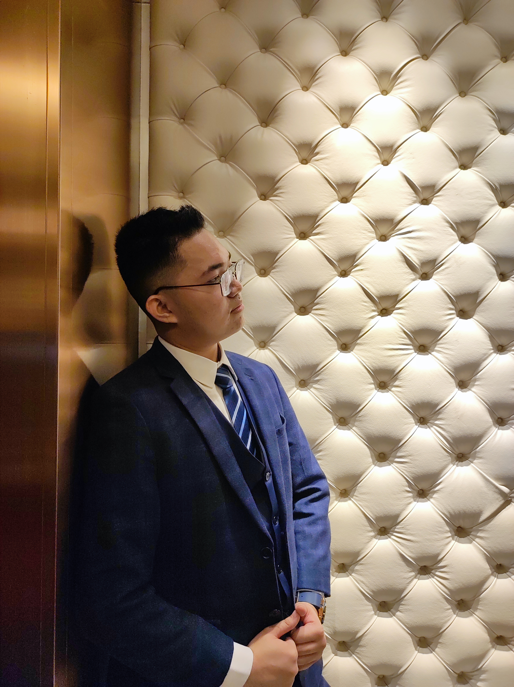

NSTP: Civic Engagement in Computer Engineering
An infographic on how the National Service Training Program connects technical skills with social responsibility.
View PDF1st Year Computer Engineering Student
Welcome to my portfolio! It is a journal of my journey as a Computer Engineering (CpE) student at Mapua University Intramuros. This is where I keep my projects, activities, and experiences from college life, so I can track my progress and growth over the years.
My goals at the university are to advance my technical knowledge, sharpen my critical thinking, grow my creativity, and learn how technology can solve real-world problems. As a future Computer Engineer, I want the skills to excel in both software and hardware development.

Hi! I'm Lance Tykon F. Llanderal, a first-year BS Computer Engineering student at Mapua University Intramuros. I'm 19 years old and the youngest in my family. I live in South Caloocan City. I chose Mapua because of its strong reputation with employers and its commitment to quality education, even though the campus is several kilometers from my home.
As a Computer Engineering student, my main focus is software, especially databases and programming. I believe a strong software foundation is needed to understand how computers work. From time to time, I also tinker with computer parts to see how they work inside and how they complement each other. When I take something apart, I put it back together, and if it was broken, I manage to get it working again.
While I study at Mapua, I hope to contribute to the university community, excel in my field, learn new skills, and build new connections as I grow as an individual and as a professional.
An infographic on how the National Service Training Program connects technical skills with social responsibility.
View PDFA paper that applies the Engineering Design Process to in-ear monitors, from the original problem to a working prototype.
View PDFMy output on neuromorphic computing, an emerging computer engineering technology.
Open on Google DriveOnline course completed through Coursera.
View certificate Verify on CourseraThe problem: Fixed collection schedules send trucks to bins that are still empty and miss bins that are already overflowing. This wastes fuel and time.
Proposed solution: Sensors in each bin report how full it is. A dashboard flags bins that need pickup and plans the shortest route to collect them.
How it works: An ultrasonic sensor and a microcontroller measure the fill level and send it to the cloud. The app then shows live bin status on a map and optimizes the collection route.
Open project files on Google DriveIn the past three months as a freshman here at Mapua, I can say it was fun yet hell. Tasks, quizzes, you name it, were all not easy. Although it has been difficult to adapt to this new environment, thanks to my classmates, friends, and family, I was able to pick myself up and slowly adjust to these changes.
I faced the difficult reality of college, where you constantly juggle your personal and academic life. Personally, the biggest challenge was adapting to commuting, but as I move forward, I'm finding college a lot more peaceful and easier than I first expected. I admit there are other challenges too, such as the insane workload, stress, sleepless nights, and quizzes. Still, I found my way through. By balancing my workload and managing my time well, I have time for myself, my family, and the person I love.
Overall, even if it was difficult, this program has been shaping me in multiple ways. It lets me use my creativity, apply my critical thinking skills, and practice strict time management. These are why I believe this program has shaped me technically and personally during my time here at Mapua so far.